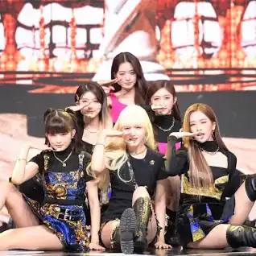
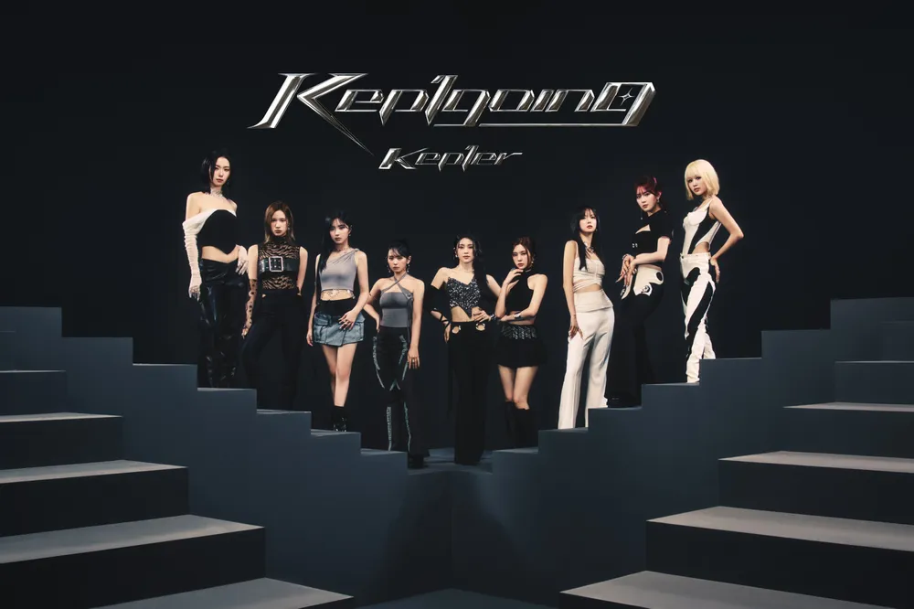
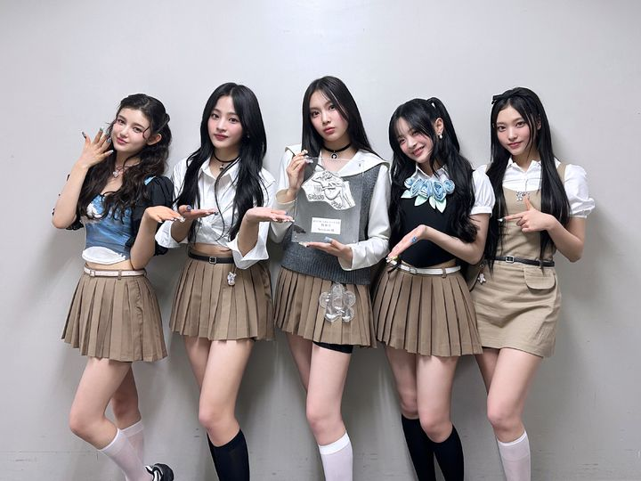

청순 콘셉트를 지나 다시금 걸 크러시 콘셉트가 트렌드로 돌아온 4세대 걸그룹답게 IVE 또한 걸 크러시 콘셉트를 기반으로 데뷔를 했으나, IVE만의 결정적인 차별점이 있다면 바로 걸크러시하면 떠오르는 파워풀한 콘셉트가 아닌 ‘소녀’라는 정체성을 유지하면서 거기에 ‘자기애’라는 이미지를 곁들인 색다른 콘셉트를 시도했다는 점이다. 걸그룹 판에서 걸 크러시로 대두되는 그룹은 흔히 말하는 센 언니라는 기믹을 전면적으로 내세우며 파워풀하고 섹시한 이미지와 콘셉트[3]를 지향한다. 그러나 IVE의 경우 일단 시대가 변하고 트렌드도 변하면서 대중들은 단순히 강렬하고 센 느낌의 콘셉트가 아닌, 보다 다양하고 색다른 모습을 원하게 된 점을 미루어 궁리하고 연구한 끝에 자신감 넘치는 아름다운 소녀 이미지를 구축해 독자적인 차별화를 시도했다.[4] 사실 이 차별화는 현재 걸크러시 콘셉트로 활동하는 걸그룹 대부분에게 해당되는 말이긴 하다. 당당하고 주체적인 소녀 콘셉트의 정석에 가까운 ITZY, 콘셉트추얼함과 자체 제작으로 승부를 보는 (여자)아이들, 독자적인 세계관과 음악 스타일로 어필하는 aespa 등. 하지만 IVE는 다른 걸 크러시 콘셉트 걸그룹들이 주로 랩, 힙합에 가까운 구성을 갖춘 음악을 내세우는 것과는 달리[5] 타 그룹보다 보컬과 멜로디의 비중이 더 높은 음악을 내세움으로써 좀 더 대중성 있고 트렌디한 음악을 한다는 평가를 받는다. 이에 더해, IVE의 노래들은 2000년대 후반 ~ 2010년대 초중반에 전성기를 누렸던 2세대 걸그룹들의 노래와도 비슷한 느낌을 많이 주기 때문에 이로 인해 호감을 느끼는 팬들도 상당히 많다.
언니 라인 멤버와 동생 라인 멤버로 구분하여 나누면, 언니라인은 1996년생인 최유진부터 2003년생인 김다연까지, 동생라인은 2004년생 히카루부터 2005년생인 강예서까지이다.[8] 멤버들 간의 나이 차이도 큰 편. 맏언니인 최유진과 막내 강예서는 각각 1996년생과 2005년생으로 무려 9살 차이다. 이로 인해 세대 차가 생기는 웃픈 상황이 가끔 발생한다. 하지만 최유진이 동안이라 얼굴만 본다면 별로 차이가 없어 보인다. 아이돌 그룹 중에선 흔치 않게 리더 뿐만 아니라 부리더가 따로 있다.[9] 리더와 부리더는 소속사에서 정해준 게 아니라, 멤버들이 의견을 교환하고 심사숙고해서, 직접 정했다고 한다. 리더와 부리더 선정에 관해, 멤버들 사이에 많은 대화와 논의가 있었던 것으로 보인다. 최유진과 마시로는 걸스플래닛 당시에도 모든 미션에서 리더였다.
대중음악은 일상과 초근접해 있는 문화이기 때문에 마치 매일 입는 옷과 같다. 특히 진(Jean)은 시대를 불문해 남녀노소 모두에게 사랑받아 온 아이템이다. 뉴진스(NewJeans)에는 매일 찾게 되고 언제 입어도 질리지 않는 진처럼 시대의 아이콘이 되겠다는 포부와 New Genes, 즉 새로운 시대를 열겠다는 각오도 동시에 담겨 있다. 5명의 멤버가 모여 어딘가 자유분방하면서도 결합력 있는 독특한 퍼포먼스를 선보인다. 소녀들이 '재밌게 즐긴다'란 표현이 어울리는 뉴진스만의 청춘 하이틴스러운 컨셉은 ‘자연스럽다’라는 느낌을 주어, 뉴진스가 많은 대중들에게 사랑 받는 데에 크게 기여한다. 데뷔곡 Attention과 Hype Boy에서부터 대중들의 눈길을 사로잡는 참신한 군무로 "자칫하면 어려보이기만 할 수 있는 십대들을 데리고 최적의 컨셉으로 밀고나갔다"라는 평을 받으며 그룹의 이미지를 확실하게 각인시켰다. 이후 발매된 Ditto와 Super Shy 등 여러 곡에서 역시 무대를 순수하게 즐기며 뛰노는듯한 멤버들의 모습으로 좋은 평가를 받았다.